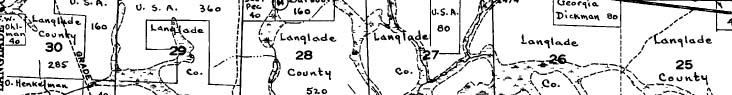

Image: A small part of a hand-drawn plat map, showing land ownership in a northern Wisconsin County in the 1950s
Acknowledgements: Background maps from Open Street Map contributors, and courtesy US Geological Survey. PLSS and vegetation map from Wisconsin DNR.